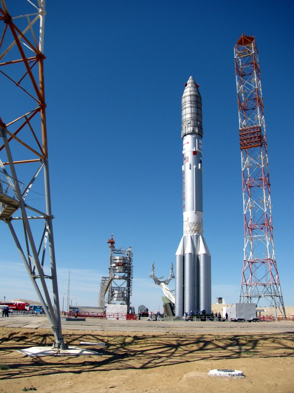

|
 |
📢 Atlas V is an expendable launch system and the fifth major version in the Atlas rocket family. It was originally designed by Lockheed Martin, now being operated by United Launch Alliance (ULA), a joint venture between Lockheed Martin and Boeing. Atlas V is also a major NASA launch vehicle. In August 2021, ULA announced that Atlas V would be retired, and all 29 remaining launches had been sold. As of 16 October 2021, 27 launches remain.
Each Atlas V rocket consists of two main stages. The first stage is powered by a Russian RD-180 engine manufactured by Energomash and burning kerosene and liquid oxygen. The Centaur upper stage is powered by one or two American RL10 engine(s) manufactured by Aerojet Rocketdyne and burning liquid hydrogen and liquid oxygen. The Star 48 upper stage was used on the New Horizons mission as a third stage. AJ-60A strap-on solid rocket boosters (SRBs) are used in some configurations. In November 2020, they were replaced by the GEM-63 SRBs. The standard payload fairings are 4.2 or 5.4 m (14 or 18 ft) in diameter with various lengths.
The Atlas V was developed by Lockheed Martin Commercial Launch Services (LMCLS) as part of the U.S. Air Force Evolved Expendable Launch Vehicle (EELV) program and made its inaugural flight on 21 August 2002. The vehicle operates from SLC-41 at Cape Canaveral Space Force Station (CCSFS) and SLC-3E at Vandenberg Space Force Base. LMCLS continued to market the Atlas V to commercial customers worldwide until January 2018, when United Launch Alliance (ULA) assumed control of commercial marketing and sales.📢
|
|  |
|
📢The Proton-M, (Протон-М) GRAU index 8K82M or 8K82KM, is an expendable Russian heavy-lift launch vehicle derived from the Soviet-developed Proton. It is built by Khrunichev, and launched from sites 81 and 200 at the Baikonur Cosmodrome in Kazakhstan. Commercial launches are marketed by International Launch Services (ILS), and generally use Site 200/39. The first Proton-M launch occurred on 7 April 2001.
Proton flew its most recent mission on 21 July 2021, delivering the Nauka to the ISS. As of August 2020, a number of Roscosmos and other Russian government missions remain on Proton launch manifest.
The Proton-M launch vehicle consists of three stages; all of them powered by liquid rocket engines using the hypergolic propellant combination of dinitrogen tetroxide as the oxidizer, and unsymmetrical dimethylhydrazine for fuel.
The first stage is unique in that it consists of a central cylindrical oxidizer tank with the same diameter as the other two stages with six fuel tanks attached to its circumference, each carrying an engine. The engines in this stage can swivel tangentially up to 7.0° from the neutral position, providing full thrust vector control. The rationale for this design is logistics: the diameter of the oxidizer tanks and the two following stages is the maximum that can be delivered by railroad to Baikonur. However, within Baikonur the fully assembled stack is transported again by rail, as it has enough clearance.
The second stage uses a conventional cylindrical design. It is powered by three RD-0210 engines and one RD-0211 engine. The RD-0211 is a modified version of the RD-0210 used to pressurize the propellant tanks. The second stage is joined to the first stage through a net instead of a closed inter-stage, to allow the exhaust to escape because the second stage begins firing seconds before separation. Thrust vector control is provided by engine gimballing.
The third stage is also of a conventional cylindrical design. It contains the avionics system that controls the first two stages. It uses one RD-0213 which is a fixed (non-gimballed) version of the RD-0210, and one RD-0214 which is a four nozzle vernier engine used for thrust vector control. The nozzles of the RD-0214 can turn up to 45.0°; they are placed around (with some separation), and moderately above the nozzle of the RD-0213.
The Proton-M features modifications to the lower stages to reduce structural mass, increase thrust, and utilise more propellant. A closed-loop guidance system is used on the first stage, which allows more complete consumption of propellant. This increases the rocket's performance slightly compared to previous variants, and reduces the amount of toxic chemicals remaining in the stage when it impacts downrange. It can place up to 21,000 kilograms (46,000 lb) into low Earth orbit. With an upper stage, it can place a 3000 kg payload into geostationary orbit (GEO), or a 5500 kg payload into geostationary transfer orbit (GTO). Efforts were also made to reduce dependency on foreign component suppliers.📢
|
 |
|
📢 The Polar Satellite Launch Vehicle (PSLV) is an expendable medium-lift launch vehicle designed and operated by the Indian Space Research Organisation (ISRO). It was developed to allow India to launch its Indian Remote Sensing (IRS) satellites into sun-synchronous orbits, a service that was, until the advent of the PSLV in 1993, commercially available only from Russia. PSLV can also launch small size satellites into Geostationary Transfer Orbit (GTO).
Some notable payloads launched by PSLV include India's first lunar probe Chandrayaan-1, India's first interplanetary mission, Mars Orbiter Mission (Mangalyaan) and India's first space observatory, Astrosat.[2]
PSLV has gained credence as a leading provider of rideshare services for small satellites, due its numerous multi-satellite deployment campaigns with auxiliary payloads usually ride sharing along an Indian primary payload. As of February 2021, PSLV has launched 342 foreign satellites from 36 countries. Most notable among these was the launch of PSLV-C37 on 15 February 2017, successfully deploying 104 satellites in sun-synchronous orbit, tripling the previous record held by Russia for the highest number of satellites sent to space on a single launch, until 24 January 2021, when SpaceX launched the Transporter-1 mission on a Falcon 9 rocket carrying 143 satellites into orbit.
Payloads can be integrated in tandem configuration employing a Dual Launch Adapter. Smaller payloads are also placed on equipment deck and customized payload adapters. 📢
|
 |
|
📢 Delta II was an expendable launch system, originally designed and built by McDonnell Douglas. Delta II was part of the Delta rocket family and entered service in 1989. Delta II vehicles included the Delta 6000, and the two later Delta 7000 variants ("Light" and "Heavy"). The rocket flew its final mission ICESat-2 on 15 September 2018, earning the launch vehicle a streak of 100 successful missions in a row, with the last failure being GPS IIR-1 in 1997.
The first stage of the Delta II was propelled by a Rocketdyne RS-27 main engine burning RP-1 and liquid oxygen. This stage was technically referred to as the "Extra-Extended Long Tank Thor", a derivative of the Thor ballistic missile as were all Delta rockets until the Delta IV. The RS-27 used on the 6000-series Delta II produced 915 kN (206,000 lbf), while the upgraded RS-27A used by the 7000-series produced 1,054 kN (237,000 lbf). The stage was 26 meters (85 ft) long and 2.4 meters (7.9 ft) wide, weighted over 100 tonnes (220,000 lb) when fueled, and burned for 260 seconds. In addition, two LR101-NA-11 vernier engines provided guidance for the first stage.
For additional thrust during launch, the Delta II used solid boosters. For the 6000-series, Delta II used Castor 4A boosters, while the 7000-series used Graphite-Epoxy Motors manufactured by ATK. The vehicle could be flown with three, four, or, most commonly, nine boosters. When three or four boosters were used, all ignited on the ground at launch, while models that used nine boosters would ignite six on the ground, then the remaining three in flight after the burnout and jettison of the first six.
The second stage of Delta II was the Delta-K, powered by a restartable Aerojet AJ10-118K engine burning hypergolic Aerozine-50 and N
2O
4. These propellants are highly toxic and corrosive, and once loaded the launch had to occur within approximately 37 days or the stage would have to be refurbished or replaced. This stage also contained a combined inertial platform and guidance system that controlled all flight events. The Delta-K stage was 6 meters (20 ft) long and 2.4 meters (7.9 ft) wide, containing up to 6 tonnes (13,000 lb) of propellant, and burned for up to 430 seconds.
For low Earth orbit, Delta II was not equipped with a third stage. Payloads bound for higher energy orbits such as GTO or to reach Earth escape velocity for trans-Mars injection or other destinations beyond Earth used a solid propellant third stage. This stage was spin-stabilized and depended on the second stage for proper orientation prior to stage separation, but was sometimes equipped with a nutation control system to maintain proper spin axis. It also included a yo-weight system to induce tumbling in the third stage after payload separation to prevent recontact, or a yo-yo de-spin mechanism to slow the rotation before payload release. 📢
|
 |
|
📢 The Molniya (Russian: Молния, meaning "lightning"), GRAU Index 8K78, was a modification of the well-known R-7 Semyorka rocket and had four stages.
The 8K78 resulted from a crash program by the Korolev Bureau to develop a booster for launching planetary probes. A larger third stage was added along with a fourth stage (Blok L) that was designed to fire in-orbit to send the payload out of LEO. The basic R-7 core was also structurally strengthened and given more powerful engines. A rushed development produced multiple malfunctions of the upper stages, which led to its being replaced by the improved Molniya-M in 1964, but there were enough 8K78s left to continue flying them into 1967. The Molniya also carried early Venera probes to Venus.
Molniya (E6) was a minor revision adapted for launch of some Luna series space probes. 📢
|
 |
|
📢 H-IIA (H-2A) is an active expendable launch system operated by Mitsubishi Heavy Industries (MHI) for the Japan Aerospace Exploration Agency. These liquid fuel rockets have been used to launch satellites into geostationary orbit; lunar orbiting spacecraft; Akatsuki, which studied the planet Venus; and the Emirates Mars Mission, which was launched to Mars in July 2020. Launches occur at the Tanegashima Space Center. The H-IIA first flew in 2001. As of November 2020, H-IIA rockets were launched 43 times, including 37 consecutive missions without a failure, dating back to 29 November 2003.
Production and management of the H-IIA shifted from JAXA to MHI on 1 April 2007. Flight 13, which launched the lunar orbiter SELENE, was the first H-IIA launched after this privatization.[1]
The H-IIA is a derivative of the earlier H-II rocket, substantially redesigned to improve reliability and minimize costs. There have been four variants, with two in active service (as of 2020) for various purposes. A derivative design, the H-IIB, was developed in the 2000s and made its maiden flight in 2009. 📢
|